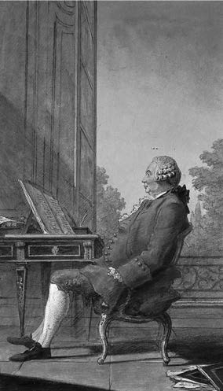

休谟否认“每一个事件都有原因”这一命题的必然性，考虑到这一点，我们也许会惊奇地发现他是多么坚定地承认其真理性。的确，在《人性论》的一段话中，在讨论恐惧和希望这两种激情时，他谈到导致这两种激情的或然性属于两种类型中的某一种，这要看对象已经是确定的但“对于我们的判断来说不确定”，还是“对象本身其实是不确定的，需要由机会来决定”（T 444），但这一次罕见地偏离了他通常的观点，即“通常所谓的机会不过是一个秘密而隐蔽的原因罢了”（T 130）。在他对激情的整个分析以及对道德和政治之基础的整个探究中，他采取的是一种决定论的正式立场。
但我们必须记住，当我们称休谟为决定论者时，绝不是说他承诺必然性在自然之中居统治地位，而顶多是说，他或其他任何理解其观点的决定论者主张各种不同事实的同时发生和相继表现出了完全的规律性。在接受这一命题时，休谟不仅把他对归纳有效性的怀疑抛在脑后，而且漠视了一个事实，即我们过去的经验所揭示的规律性远远不够完美。这些规律性并没有涵盖所有被普遍接受的材料，其概括水平允许在它们所例证的事例中有某种未经解释的自由。休谟没有注意到第二点，但确实承认了第一点。在讨论第一点时，他把“按照事物的初次显现来认识事物的俗人”的观点与把一切不规律性的显现都归因于“相反原因的秘密对立”（E 86—87）的哲学家的观点进行对比。对这一做法的反驳是，它把决定论论题归结为一种约定。如果我们可以通过诉诸秘密力量来排除任何不利证据，那么决定论在一切情况下都可以幸存。为了赋予它某种价值，我们需要把它分解成一套工作理论，然后把它们应用于不同的事实领域。的确，如果我们的理论失败了，我们也许仍然会希望找到其他能使我们成功的替代理论，但至少在任何给定的阶段，我们所提出的问题都将是经验的。
虽然休谟并没有考虑这些，但没有理由认为他不喜欢它们。因为他想提出的命题与其说是物体的运作被严格控制着，不如说是在这方面物体与心灵之间没有区分。人性的特性与无生命物体的特性一样都是恒定的，而且“这种规则的联合被所有人普遍承认，无论在哲学中还是在日常生活中，它都从未成为争论的主题”（E 88）。如果我们惊讶地发现这话是对哲学说的，那么我们应该提醒自己，在休谟的用法中，“哲学”一词包含了科学；他在这里坚持的是，习惯于从过去的经验中推出未来的经验，以及假定那些比我们实际发现的更为牢固的规律性，在社会科学中出现得并不比在自然科学中少。
休谟由此得出的结论是，如果自由意志意味着人们的行为是没有原因的，那么就没有人会认真相信自由意志。他承认，在涉及一个人自己的行为时，这个人会倾向于声称这种自由。“我们觉得自己的行为在大多数情况下受制于我们的意志，并设想我们的意志自身不受制于任何东西”（E 94），这部分是因为我们没有任何约束感。我们也许不知道我们所服从的所有规律性，即使我们发现了这些规律性，我们也可能仍然会幻想摆脱其控制。我们甚至会在我们认为相同的情况下选择不同的做法，从而令自己满意地证明这一点，却没有看到一个决定性的区别：
既然我们打算站在旁观者一边，最后这句话显然是回避了问题，而且就此而言，休谟没能证明他的论点。但无论从这种失败中可以得出何种教益，它都不会强化那些希望维持自由意志与责任之间通常联系的人的立场。在他们看来，以及在休谟看来，纯粹物理的原因不可能起全面的支配作用。于是让我们假定，我们的行为并非高度规则地出自我们的品格和动机。我们可以把这些行为的难以捉摸归因于什么呢？我认为只能归因于偶然。但除了源于我们动机和品格的那些行为，为什么认为我们要为那些偶然发生的行为负责呢？我们也许可以用我们的遗传天赋以及从小就有反应的肉体和心灵的刺激来解释它们。
这并不是否认我们有任何形式的自由。休谟把自由解释为“按照意志的决定来行动或不行动的一种能力”（E 95），我们通常都具有这种能力。不仅如此，休谟还可以论证说，正是这种自由，而不是我们无法声称对其有权利的那种意志自由，才是“道德的关键”。他的论证是，“行为是我们道德情感的对象，仅仅因为它们暗示了内在的品格、激情和情感”（E 99）。当行为“仅仅源于外在的强制时”，由它们不能引出毁誉；同样，除非对人们的动机和品格有影响，从而影响他们的行为，否则区分毁誉、赏罚也就没有意义了。这并不能阻止我们对死者或者出于其他原因我们没有实际能力去影响的人的行为进行赞扬或责备，但这主要是习惯力量的另一种说明。我们发现在许多情况下，表达赞扬或责备可以促进或禁止人的行为；这种做法很有用，这使我们习惯于对所有这类行为都以同样的方式来回应。还要指出，甚至当相关行动者超出了我们所能及的范围时，我们对其行为的评价也仍然会影响那些有意效仿他们的人的行为。
除了宣称自己对自由的定义是“所有人都同意的”以外，我认为休谟在自由意志问题上是正确的。我认为一般人都同意，休谟为自由设定了一个必要条件。但我怀疑它是否被普遍视为充分条件。在我看来，不仅我们的道德判断，而且我们对于自己和他人的许多感受，比如自豪或感激，都部分受制于一种赏罚的观念，这种观念要求我们的意志能在一个比休谟的定义更强的意义上是自由的。我们以混乱的方式赋予自己和他人一种有时所谓的自我决定能力。问题在于，即使有某些东西与这种描述相符合，我们也无法逃脱休谟的困境。这种能力的运用要么会符合因果模式，要么随意发生，无论是哪种情况，它都无法证明责任的归属是正当的。为了避免上述混乱，我们可以像休谟实际提议的那样改变我们的赏罚和责任观念，使之符合一种纯粹功利主义构想，但我们对自己情感的控制能否遵守这一政策，即使能够如此，我们所遵守的政策又是否完全可取，这些都是有争议的问题。
休谟悄悄顺带提出了引人注意的一点：如果决定论是有效的，并且假定存在着一位全能的造物主，那么对于希望坚称造物主是善的人来说，就会产生另一个困境。正如休谟所说，“从一个如此善好的原因出发，人的行为……根本不可能有道德上的邪恶；如果它有任何邪恶，则必然意味着我们的造物主有同样的罪责，因为我们承认他是那些行为的最终原因和肇始者”（E 100）。我们可以通过完全抛弃罪责的概念来逃脱这个困境。我们可以论证说，由于罪责的概念依赖于自由意志这个混乱的概念，所以我们无论如何都应当这样做。但逃脱之后很快又会被擒获，因为可以用罪恶来重新表述这个困境，并且给造物主加上更重的负担，因为并非世界上的所有罪恶都源于人类有意的行为。这样一来是无法逃脱的，因为至少可以认为罪恶包含着人和动物的大量苦难，不可否认有这些苦难发生。在某些情况下，相信它来自一个善的原因也许可以减轻它，但这些情况是例外，而且我们不清楚除了减少恶，由此还能得到什么。既已否定“这是所有可能世界中最好的一个”这一荒谬建议，我们只能下结论说：如果有一个全能的造物主，那他绝不是善的。
像往常一样，休谟让读者自己去得出这个结论。提出自己的论证之后，休谟满意地指出，“迄今为止人们发现，既捍卫绝对命令，又能使神不必成为罪的创造者，这超出哲学的一切能力”（E 103）。由于休谟论证中最薄弱的一环是其决定论假设，所以值得指出的是，即使该假设被放宽，其结论也几乎不会受到损害。即使造物主只想让世界上的某些恶产生，而把其余的恶留给偶然，他的道德地位也不会高很多。
在讽刺性地评论说神的涉罪问题已经超出了哲学的力量之后，休谟指出这一主题“适度地回到了它真正的固有领域，即对日常生活的考察”（E 103），这正是他在对人的道德做出哲学解释时所遵循的方针。我们如果仔细考察就会发现，休谟的道德哲学是微妙而复杂的，但它是从少数能被清晰引出的原理中导出来的。这些原理中有些是分析的，有些是心理学的。我先来陈述和讨论它们，再考虑休谟从中得出的结论。
这些原理如下。我所列的次序并没有什么特殊意义。
1.只关心发现真与假的理性“绝不能成为任何意志活动的动机”（T 413）。休谟正是从这个原理导出了其著名格言：“理性是而且仅应当是激情的奴隶，除了服务和听命于激情，再不能号称有其他任何职务。”（T 415）
2.激励我们的激情可以是直接的或间接的，平静的或猛烈的。直接的激情，如喜悦、悲伤、希望和恐惧，或是源于人的自然本能，或是源于我们对善的渴望（这里可以等同于快乐），或是源于对罪的反感（这里可以等同于痛苦）。间接的激情，如傲慢、谦卑、爱恨，则源于这些原始动机与其他因素的结合。这种区分独立于平静与强烈的区分。由于动机可以是猛烈的，所以“人们往往有意违背自己的利益来行动”，而且并不总是受到“他们对最大可能的善的看法”的影响（T 418）。
3.对其他生物的同情是一种自然本能。其力量在于，虽然我们“很少碰到爱别人甚过爱自己的人”，但也同样“很少碰到各种友善的感情加到一起都不超过全部自私的人”（T 487）。这种同情或仁爱的自然本能对于我们道德和政治态度的形成意义重大。
4.“既然道德……会影响行动和情感，所以道德不可能源于理性。”（T 457）因此，“道德准则并不是我们理性的结论”。
5.道德判断并非对事实的描述。“以公认为邪恶的故意杀人为例。现在从各个方面来考察它，看看是否能发现你所谓邪恶的事实或实际存在。无论以何种方式考察它，你只会发现一些激情、动机、意愿和思想。这里没有其他事实。”（T 468）同样，如果突然遇到“没有一个命题不是由‘应该’或‘不应该’联系起来”（T 469），而不是“命题中通常的‘是’与‘不是’等系词”时，人们就被戏弄了。“这种新的关系可以从与之完全不同的其他关系中推导出来”是不可能的。
6. “邪恶和德性也许可以与声音、颜色、冷热相比，根据近代哲学的说法，这些东西都不是对象中的性质，而是心灵中的知觉。”（T 469）因此，“当你宣称任何品格是邪恶的时候，你的意思仅仅是说，由于你天性的结构，你在沉思它之时有了一种责备的感受或情绪”。值得注意的是，在这里以及休谟关于道德的其他论述中，他都采用了洛克关于第二性质的观点，尽管此前他在论述理解力时曾经拒斥过它。
7.虽然我们会谈及善行或恶行，但其功过仅仅源于或善或恶的动机，仅仅是作为这些动机的标记或由此出发来行动的人的品格，才可以对这些行为做出道德评价。
8.由“心灵的活动或性质”所唤起的我们称之为德性的赞许之情本身是令人愉快的，而非难之情则与恶有关，是令人不快的（E 289）。因此，我们也可以把德性看成“产生爱或自豪的能力”，而把恶看成“产生谦卑或憎恨的能力”（T 575）。
9.唤起我们赞许或非难的是把性质或动机评价成分别产生了快乐或痛苦的优势。这些评价也可以被称为功用判断。
10.“除非人性中有某种动机来产生区别于其道德感的行为，否则任何行为都不可能是有德性的或在道德上是善的。”（T 479）
11.道德的和政治的义务所依赖的正义感并非源于任何关于反思的自然印象，而是源于由“人为约定”而起的印象（T 496）。
我们先来考察心理学原理。有人也许会怀疑仁慈不超过自私的情况是否像休谟所假定的那样罕见，但我找不出好的理由去怀疑我们的确有一种同情或仁慈的自然本能。有人曾试图使同情从属于自爱，但在我看来，这些尝试是悖理的。既然没有什么先验的理由去假设任何行为都有自私的基础，因此在这个事例中，接受休谟所谓的“事物的明显显现”（E 298）是更为简单和合理的。
这里我不再深究休谟关于直接与间接、平静与猛烈的激情之间区分的细节，我认为应当接受以下几点。首先，并非所有有意的行为都是由动机引起的，即源于给自己或他人或整个社会带来某种好处的愿望；其次，即使我们的行为是由这样的动机引起的，这些行为也不一定符合功利主义原则。我们已经承认，这些行为很少符合纯粹的利己主义原理，但它们也不是纯粹利他主义的。同情在程度上各有不同，而其力量依赖于一个人与同情对象之间可能有的各种其他关系。它并不单纯正比于一个人对于对象的价值或需求的估计。因此，一个人可以选择不只是牺牲自己的利益，而且也牺牲他认为更大范围的更大利益，来使自己家族的成员、爱人或朋友得到好处。当一个人的行动不是故意的时，像怜悯、窘迫或愤怒这样的情感也许会引导我们甚至有意做出一些对任何人都没有好处的事情。也许有人会说，怜悯或愤怒所导致的行为是故意的，因为它们蕴含着一种给有关的人带来好处或坏处的欲望，但对此的回答是，欲望来源于感情，而非相反。也不必像休谟似乎暗示的那样，不顾结果的行为只来源于猛烈的激情。它们往往源于惰性。我们根本不愿费心去实现自己的偏好，无论这种偏好是获得快乐还是摆脱不利处境。还可以指出，我们对所付出努力的轻视被判断为超出了我们期待从其结果中产生的价值，但除非允许这种判断是无意识的，从而认为这种论述是无足轻重的，然后把它等同于惰性，否则我认为它根本与事实不符。
说有动机的行为并非一般都符合功利主义原则，并不是否认它们应该与之相符。我们仍然可以坚持说，只有当它们符合这一原则时，我们才认为它们是道德的。事实上，我们还有进一步的心理障碍，那就是我们不仅并不总是做我们想做的事情，而且甚至当我们正在做我们想做的事情时，我们的目的也往往比产生快乐状态或消除痛苦状态更明确，虽然这里同样可以认为，只有具有这些目的时，我们的行为才被视为道德的。但我认为，把这种观点归于休谟是错误的。诚然，他说“心灵的每一种性质，通过单纯的审视就能给人以快乐的，都被称为善的；凡产生痛苦的每一种性质都被称为恶的”（T 591）；他还补充说，“这种快乐和这种痛苦可以来自四种不同的来源”，因为“我们只要观察到一种品格自然地对他人有用，或者对自己有用，或者令他人愉快，或者令自己愉快，就会获得一种快乐”。然而，有两点削弱了这段引文的分量。一是休谟并不认为我们在考察一种善的性质时所拥有的快乐总是同一类的，它会按照所考察性质的本性而变化。另一点是，他在谈到一种自然地对他人有用的品格时，并没有把这种功用等同于快乐的最大化，而在于它可以满足受影响的人碰巧拥有的无论什么欲望。

图9 休谟像，路易·卡罗日 （1717—1806）作
在这一语境下，同样值得指出的是，休谟并不是像边沁和密尔那样的功利主义先驱。我们将会看到，休谟把约定俗成的正义德性与公共利益联系起来，但他绝非把促进最大多数人的最大幸福这样的东西视为我们道德赞许对象的一般特征。
有人反对休谟说，并没有类似于物理感觉的道德感，也没有对德性或品格的看法总是唤起的关于道德赞许的特殊感受。对此的回答是，休谟并没有说存在着这种东西。诚然，正如我们所看到的，他谈到当我们沉思一种我们称之为邪恶的品格时，我们会有一种责备的感觉或情感，但他所要提出的论点是，在把某种品格称为邪恶时，我们并不是赋予它一种特殊的内在属性，而是在表达我们对它所拥有的属性的反应。这种反应的确必定是反对的，但它无须在任何情况下都有完全相同的形式。事实上，我们的确有厌恶感或道德上的义愤，但它们并不需要总是出现在每一个道德谴责事例中。我们的道德赞同或不赞同的态度实际上在于各种不同的状态、倾向和行动，并非所有这些东西都富有情感。
我还相信，当休谟谈到我们使用道德谓词仅仅是意指对它们所指的行为或品格进行思考使我们有了善意或敌意的感受时，一些批评者误解了休谟“意指”一词的含义。我并不认为休谟是在提出这样一个论点，即“X是善的”这一形式的陈述在逻辑上等价于“我在思考X时有一种在道德上赞同的感觉”，或者等价于“对X的思考在大多数正常人中唤起了一种赞同感”或“在某种社会的大多数成员中唤起了一种赞同感”这样的陈述。关于行为的正确性或履行这些行为的义务的陈述也是如此。我并不认为休谟具有这样的看法，即在做出这类陈述时，我们是在暗地里就我们自己或其他实际的或可能的批评进行断言。的确在某种意义上，休谟给我们的道德判断提供了一种分析，但这种分析并不是想提供一种对表达它们的句子进行翻译的窍门，而在于论述我们运用道德谓词的情况以及这种运用所要达到的目的。此外，如果我们坚持要从休谟那里提取出一种对我们道德陈述的重新表述，为了更接近目标，我们可以说他提出了近代的“情感理论”，即可以用道德陈述来表达我们的道德情感；而不是说他提出了这样一种理论，即道德陈述是关于我们自己或他人心灵状况的事实陈述。
我们甚至还不清楚休谟被称为一个道德主观主义者是否是正确的，除非我们这样来使用“主观主义”一词，使我们可以正确地说，“洛克对颜色这样的性质作了一种主观主义论述”。但是说道德判断并非对事实的描述，这难道不是休谟的一条原理吗？的确如此，但它的意思却是，道德判断缺少那种可以在对人的动机描述或对人实际所做的事情的论述中找到的事实内容。从另一种观点来看，某一类动机或品格倾向于在思考它的人当中唤起某些反应，这和“这些反应是（或倾向于）被产生出来的”都是事实。在休谟的文本中也没有任何证据表明休谟想否认这一点。他的确想否认的是，道德谓词代表着洛克所谓的第一性质，或者换句话说，它们代表着被应用于动机、品格或行为的内在特征。
在这一点上，休谟无疑是正确的。以他所举的一个故意杀人案为例，这一行为的恶并不是它的一个附加特征，同凶手的种种动机或各种杀人手法等事实并列在一起。它也不表现为覆在这些事实连接上的一层釉。我说它是错误的行为也许带有一种描述性内容，如果认为它预设了我接受某种流行的道德准则，于是我在断言这种行为违反了这一准则的话；但它并不必然有这种预设。如果我的道德情感与我的共同体或任何其他共同体中流行的道德情感相左，那么它将不会变得无效。要想在某个事例中说服我放弃我的道德情感，不仅可以向我表明我对事实的了解不够准确或完整，也可以有其他各种方式。例如，也许可以基于哲学理由使我确信，只能认为违法者患有疾病；我也许会认为保持我的道德态度的一致性很重要，也许会被说服，这种情况与我曾持有不同看法的其他情况并无很大区别；我也许会被给予理由去认为，我对这件事的看法被我自己经验和品格的不当特征所蒙蔽。因此我也许会判定，我最初的道德判断是错误的。我说“错误的”而不说“假的”，是因为我认为只给那些带有预设了某种准则的道德判断赋予真值有助于澄清问题，这样一来，判断是否符合该准则提供的衡量标准就成了一个事实问题。显然，这既不意味着任何准则都是神圣不可侵犯的，也不意味着所有道德判断都是同样可接受的。
休谟关于从“是”推不出“应当”的主张也受到了质疑。最受喜爱的反例是“承诺”。有人论证说，由一个人在某些明确条件下说出形式为“我保证去做X”的句子这一纯粹事实前提可以逻辑地推出，在其他条件不变的情况下他应当做X。但这是一个谬误。如果这个论证看起来有说服力，那是因为它处于一种为承诺（也就是说，通过在恰当条件下说出一连串语词来承担一种道德义务）做好准备的道德气氛中。但如果我们所讨论的是一个逻辑蕴含的问题，那就无法正当地预设这种气氛的存在。我们只能把它说成是一个附加的前提，意思是说话者属于一个社会，这个社会有一条公认的原则，即说出如此这般的语词在某些情况下就是承担一种道德义务。这同样是一个事实前提，但即使把它与另一个前提结合起来，也得不出想要的结论。我们仍然需要这样一条道德前提，即他的社会的这条规则是应当遵守的。
对休谟理论的一个简单反驳是，它不仅适用于我们通常所谓的善恶，比如勇敢或懦弱、忠诚或无信、吝啬或慷慨，而且也适用于自然的禀赋或缺陷，比如美貌或丑陋、聪明或愚笨、合群或孤僻。在《人类理解研究》的一个附录中，休谟承认了这个事实，但认为它不重要而不再考虑它。在这一点上，他求助于常常被他视为楷模的西塞罗的权威以及亚里士多德的权威，亚里士多德“不仅把正义和友谊，而且把勇敢、节制、慷慨、谦逊、谨慎和男子气的坦诚也列入了德性”（E 319）。这没有解释我们通常所作的区分，虽然我怀疑休谟声称它并非基于任何一致的原则是正确的。我们可能会倾向于把“道德”这一名号局限于那些美好或恶劣的品质，这些品质需要更多的培养才能成为习惯，或者在更大程度上依赖于是否有自律。这仍然允许把好的风尚算作德性，但我并不认为这是不可接受的。
众所周知，康德认为只有出自义务感的行为才是道德的。康德的研究者如果发现休谟说，某个行为要想在道德上是善的，就必定出自某种并非道德感的动机，他也许会感到惊讶。休谟并不否认人们能够而且的确出于义务感而行动，他所否认的是这本身就能赋予某个行为以任何价值。一个生性吝啬的人也许会为此而渐渐感到羞愧，因此强迫自己做出慷慨的举动。最终，他起初对于慷慨的不情愿也许会被克服，也许还没有克服。然而，他克服吝啬并不必然是为了使他的行为在道德上成为善的。行为的善依赖于他习惯性地做出慷慨的举动，只要这是真的，那么这个人是否有慷慨的感觉，是否认为表现出与其性情相反的慷慨对自己有利，或者是否因为认为应当慷慨而违背自己的性情去行动，都不会导致道德上的差别。因此，我们必须避免被休谟所说的“行为只有作为善的动机或善的品格的标记才能在道德上是善的”所误导。这并不意味着他认为品格或动机本身就是善的。它们之所以是善的，仅仅是因为它们习惯性地引起了得到道德赞许的行为。是结果定了调子：动机之所以处于显要地位，仅仅是因为人们往往指望它们产生出仁慈的行为。把义务感当成一个人行为好的主要动机其实是要反对的，因为这暗示一个人仁慈的天性不足。
事实上，休谟和康德在这个议题上的对立走得更深，因为康德用义务感来限制道德的根据是，只有自由地行动，这种行为才可能有道德价值，而只有从义务感出发来行动，这些行为才是所要求的自由行为。但我们并不清楚这种形式的自由应该是什么样子，但无论如何，在此基础上区分义务感和其他任何动机似乎都是没有根据的。
理性自身绝不能成为任何行为的动机，虽然这看起来像是心理学的原则，但休谟却把它当成分析性的原则来加以辩护。休谟能够得出这一原则，是因为他把他所谓的理性限制于推理和评判真假，而且他从语义上假定起作用的动机不能在实质意义上被称为真或假。理性能够控制激情，因为可以用理性来发现一种激情建立在错误判断的基础之上，例如当事实证明一个人的恐惧对象并不存在时，或者被选择用来实现某种目的的方法并不足以实现目的时。休谟没有注意到的第三种情况是，理性向我们表明，实现一个我们所希望的结果将可能导致我们更希望避免的某种东西的出现。理性是而且只应是激情的奴隶，对休谟来说，这个戏剧性的陈述只不过是一则老生常谈，即只有当我们出于某种动机来实现某个目的时，理性才进入行为领域。“只应是”仅仅是一种修辞上的夸大，因为目的的选择已被排除在理性范围之外。同样，休谟那些惊人的断言，如“宁愿毁灭全世界也不愿伤害自己一根手指，这并不违反理性”，或者“我宁愿毁灭自己，也不愿与一个印第安人或我完全不认识的人发生些许不快，这也不违反理性”，或者“我宁愿为了我所认为的较小的好处而舍去我较大的好处，这也不违反理性”（T 416），都不过是一个几乎没有争议的假设的推论，即一个人的偏好无论多么古怪，都不是真值的承载者，而且并不必然是任何错误推理的结果。
另一方面，说道德影响我们的行为和感情，所以它不可能从理性推出，这一支持论证是无效的。甚至按照休谟自己的观点，我们的行为和感情也可能受到我们判断的真假的影响，或者受到我们的推理是否可靠的影响；我们的目的只有不被视为实现更进一步目的的手段时，才不会受到这种影响。然而，“道德规则并不是我们理性的结论”这一推断是独立地成立的，因为它正确地声称，道德规则并不出现在“观念的关系”领域中。
现在面临的主要反驳是，我们的确有一种关于结果或手段的合理性的构想。为了避开这一反驳，休谟提出我们误把平静的激情当成了“理性的决定”。但这种回答并不充分。诚然，当一个人不计后果地仓促行动时，我们说他的行为是非理性的，但我们也会把某些目的的本身当成非理性的，比如出现在休谟的例子中的那些目的。我认为这是指，任何一个明智的人都不会做出这些选择。这里显然有循环论证的危险，因为他对目的的选择进入了我们对于什么是明智的人的构想。为了避免这种循环论证，一个可能的办法是把下述情况当作事实：一个习惯于选择某种特定类型目的的人会在一般旁观者心中唤起一种愚蠢的印象。然后我们可以通过这个人的行为来定义目的的非理性，并把目的的合理性定义为它的反面。
休谟在正义感中发现了我们义务的来源，现在的问题是，这种正义感是自然的还是人为的。休谟说它是人为的，其根据在于没有自然的动机来提供它。除了极少数例子，人没有任何像“人类之爱”那样的激情，他们对待少数人的自然的仁爱之情会导致不公，因为它会引导他们以公共利益为代价来提升这些人的利益。从人的自私也不能直接产生正义感，尽管休谟对正义感的解释的确把它与自利间接关联起来。
休谟的解释如下。由于身体上的弱点，一个人只有作为群体的一员才能幸存和成长，即使起初它只是一个像家庭那样的小群体。随着群体的混合，它们往往会相互掠夺。“我们拥有三种不同种类的好处：我们内心的满意，我们身体的外在优点，以及我们通过勤劳和好运而获得的对这些所有物的享用。”（T 487）这里处境危险的主要是第三种好处，一方面是因为人的贪婪和鲜有仁爱之心，另一方面则是因为自然的吝啬。如果人们总是生活在一个充裕的环境中，无论怎样爱好奢侈，其物质欲望都能轻易得到满足，那么“小心翼翼唯恐失去的正义德性将永远不会被梦到”（E 184）。照目前情况来看，不同的群体不得不为那些现成的或可以获得的数量不多的物品而竞争。如果对这种竞争不加限制，那么没有人能够指望“安享他凭借运气和勤劳所获得的东西”（T 489）。为了避免这一灾难，人们发现遵守一套协议对自己是有利的，这种协议确立了财产权，也规定了财产从一个人合法地转移到另一个人的条件。这些协议并不是承诺。恰恰相反，承诺本身乃是基于协议，协议的目的就是使人对彼此之间未来的行为有安全感。财产的稳定性、可经同意而转移财产，以及履行承诺，这三条法则正是“人类社会的和平与安全所完全依靠的”（T 526）。
到目前为止，它还只是一个自利问题。道德既是自然地又是人为地被牵连进去；说它自然地被牵连进去，是因为我们同情非正义行为的受害者，这要么是通过我们对他们的感情，要么是在感情之外通过在想象中把我们放在他们的位置；说它人为地被牵连进去，是因为那些教育和统治我们的人自认为要训练我们把颂扬的短语用到对正义规则的遵守上，而把责难的短语用于对正义规则的破坏上，从而唤醒和加强与这些短语的使用相联系的道德情感。
这些规则的正当性在于，遵守它们有助于公众利益。然而，这只在一般情况下正确，而在某些特殊情况下则可能不正确。休谟给出的一个例子是，当“一个性情仁厚的人将一大笔财产归还给一个守财奴或煽动叛乱的顽固分子”时，他的“行为是正义可佩的，但公众却是真正的受害者”（T 497）。即便如此，休谟还是坚持认为我们总是应当遵从一般规则，这与今天的许多功利主义者看法一致。休谟没有作进一步论证，他只是说，“好处与坏处是不可能分离的。财产必须稳定，必须被一般规则固定下来。虽然在某种情况下公众也许是受害者，但这个暂时的坏处因这一规则被坚持执行，因其在社会中确立的安宁和秩序而得到了充分补偿”（T 497）。那么，为什么公众非得受害不可呢？这似乎只能因为对例外的宽容削弱了对一般规则的尊重，结果导致的失去功用将会超过例外的功用。但即使我们接受这一推理思路，它也不会包含下述情况，即对一个违反规则的行为的选择不大可能被众人知道。既然我们离开这一规则更能实现它的目的，我们为什么还要遵守这一规则呢？我不相信那些主张现在被视为规则功利主义的人能够令人满意地回答这一问题。
对于休谟正义理论的另一个反驳是，它与财产制度结合得过于紧密。例如，它为平等价值制定的唯一条款是，我们都有义务遵守我们的协议所确立的规则。不过这是一个容易补救的缺陷，因为总是可以对协议进行调整以符合各种利益安排，从而引导社会成员接受它。
虽然正义对于社会的维持是必需的，但在休谟看来，政府却不是如此。一个原始的未开化社会可以没有政府而维持下去。只有在战争胜利时，才需要一段时期的政府去协调战利品的瓜分。于是，士兵首领就有可能成为内部的仲裁者。正是由于这个原因，根据休谟的说法，“所有政府起初都是君主政治的”。
在更发达的社会中之所以需要政府，是因为人们自然倾向于为了短期目标而牺牲长远目标，限制他们这样做是符合他们利益的。因此，他们服从统治者是值得的，统治者的短期利益包括维持他们的特权，而这又依赖于法律和秩序的强制实施。统治者的确有可能变得非常残暴，以致没有他们其臣民会生活得更好。在这种情况下，其臣民如果有能力，就可以自由地推翻他们。然而，由于它所导致的动荡，这种行动不可能轻易进行，而且公民服从的习惯也使他们忍受暴政的时间要比只注重自己利益时能忍受的时间更长。建立各种特殊的政府有各种方式，包括继承王位、征服和实施宪法等。更重要的是权力的保有。无论一种政府体制是如何产生的，一般来说单凭它的持续就足以使它的存在被视为合法的。于是在某种意义上，政府建立在被统治者同意的基础之上，但这并不意味着我们必须发明一种社会契约来为政治服从做出道德辩护。既然正义规则对于契约的有效性来说是必需的，也足以解释政治义务，因此正如休谟正确指出的，即使是一个真正的契约，在这种情况下也起不了作用，更不要说那些政治作家试图作为契约而提出的哲学虚构了。有人指出，我们通过选择仍然臣服于一个政府来履行服从政府的义务，但除了其他反对意见，这预设了我们拥有一个严肃的替代方案，而事实往往并非如此。否则，正如休谟在《论原初契约》一文中所说，这就像告诉一个被拐骗到船上的人，他可以自由地跳水而死一样。
休谟并未试图把道德与宗教关联起来，这无疑是因为他看到不能把道德基于任何形式的权威，无论这种权威有多么强大，虽然宗教信念也许可以通过它对激情的影响而充当一种约束力。在任何情况下，休谟更感兴趣的都是宗教信念自命为真理，而不是宗教信念的功用。我们已经看到，他拒绝接受基督教。通过考察《自然宗教对话录》，现在我将试图证明我的说法是正当的，即休谟也拒绝接受自然神论。
《自然宗教对话录》中的三位参与者是：第美亚，他相信虽然我们无法参透上帝本性的奥秘，但可以先验地证明上帝的存在；克里安提斯，他论证说，我们证明上帝存在的唯一方法就是通过对世界进行观察，因此他的有神论建立在通常所说的“设计论证”的基础上；还有怀疑论者斐罗，他同意克里安提斯的看法，即设计论证是唯一值得考虑的论证，并且致力于表明这是一个多么可怜的论证。这并没有使他公然宣称无神论。他甚至断言：“当讲理的人处理这些主题时，问题永远不在于神的存在，而仅在于神的本性。”（D 142）但考虑到他的一般论证，这种说法就显得有讽刺意味了。在《自然宗教对话录》的安排中，斐罗讲得最多，这是我们认为他在为休谟代言的一个理由。
第美亚的论证是，任何事物的存在都必有原因，无穷追溯原因的观念是荒谬的，只有存在着一个必然存在的最终原因，这种无穷追溯才能停止。那就是神，“他自身之中包含着存在的理由；如果假定他不存在，必定会蕴含一个明显的矛盾”（D 189）。克里安提斯对这一论证的反驳是，神的存在据信是一个事实，而任何事实都不能先验地证明。不仅如此，如果我们有资格谈论一个必然存在，它也许就是宇宙自身。第美亚并未尝试去回应这个斐罗也认可的反驳，他在《自然宗教对话录》其余部分中的角色仅限于偶尔发出一个虔诚的抗议，指责克里安提斯未在人的性质和能力与其造物主的性质和能力之间做出足够大的区分。
虽然克里安提斯举了自然之中适应目的的许多例子（斐罗接受这些例子），但他的立场在一则关于设计论证的有力陈述中得到了概括：
斐罗对这个论证的回答是整个《自然宗教对话录》的主题，但他对它的主要反驳可以简要地概括如下：
1. 因果论证基于经验到的规律性。由于我们并不熟悉多个世界，所以在这种情况下没有规律性可用。克里安提斯只能诉诸类比，这是一种较弱的推理形式。
2. 如果我们基于相似的结果有相似的原因这一假设来坚持作这个类比，我们还是没有理由得出结论说，宇宙是由一个无限的、永恒的和无形的存在设计出来的。我们没有经验到任何这类东西。机器是由终有一死的人建造的，这些人有身体，有性别，共同协作，会试错，会犯错和纠正，会改进其设计。因此，我们有什么权利剥夺宇宙设计者的身体和性别呢？为什么我们不能得出结论说，世界是许多神共同努力的结果呢？为什么世界不能是“某个幼稚的神初次尝试的简陋作品，后来又抛弃了它”，或者“某个老迈的神在年老昏聩时的产物”（D 169），他死后任宇宙自行运转呢？为什么不会是多个世界“在永恒的时间中被笨拙地创造出来和修补之后，这个世界才被开创出来”（D 167）呢？
3. 即使这种类比对于克里安提斯来说太强了，那么事实上它也是太弱了。世界的确包含着许多人工物，也包含着许多自然物，这些自然物至少就它们或者它们的某些部分服务于某种功能而言是与这些人工物相似的。但这并不意味着整个宇宙是一部机器或某种类似的东西；也不意味着宇宙有什么目的要服从。说它像一部机器，还不如说它像一个动物或植物有机体。“说世界是由另一个世界所播下的种子长成的，和说世界源于一种神的理性或设计，是同样明智的，同样符合经验的。”（D 178）
4. 如果我们正在从物体的宇宙追溯到“一个相似的观念的宇宙”（D 162），那么我们为什么要停留在那里呢？如果观念的秩序不需要作进一步解释，为什么我们在物质中发现的秩序就需要呢？
5.我们对于世界的经验表明，“物质能保持永恒的骚动（这似乎是物质的本质），也能保持它所产生的形式的恒常性”（D 183）。为什么我们不能满足于认为物质有一种力，使物质从一种原始混沌发展成一种秩序，这种秩序可以解释“宇宙中出现的所有智慧和设计”（D 184）呢？这种理论肯定比无法证实且几乎无用地假设一个超自然动因更为可取。
6.设计论证不仅面临着所有这些反驳，而且即使放弃这些反驳，它也得不到什么结果。接受这个论证的人最多只是有权说：“宇宙以前起源于某种类似于设计的东西，但超出了这一点，他就无法肯定任何一种情况，此后只能肆意进行幻想和假说去调整其神学的每一个论点了。”（D 169）
在休谟看来，也许最后一点是最重要的。正如我试图表明的，他在许多方面都发动了反对宗教信念的战役，但他最希望使哲学不像神学那样陷入“放肆的幻想和假说”。我们已经看到，他并非一致性的典范，但至少在其自然主义方面是一致的，他坚持每一门科学都要扎根于经验。他的主要兴趣太广，无法用一段话来概括，但他的总体看法也许可以概括出来。我认为最好的做法莫过于引用他在《人类理解研究》结尾的一段名言：